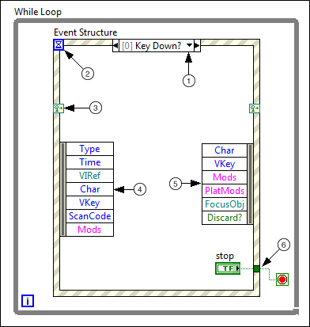

Event Structure
Owning Palette: Structures
Requires: Base Development System
Waits until an event occurs, then executes the appropriate case to handle that event. The Event structure has one or more subdiagrams, or event cases, exactly one of which executes when the structure executes to handle an event. This structure can time out while waiting for notification of an event. Wire a value to the Timeout terminal at the top left of the Event structure to specify the number of milliseconds the Event structure waits for an event. The default is -1, which indicates never to time out.
 Add to the block diagram Add to the block diagram |
 Find on the palette Find on the palette |
You can configure a single event case to handle multiple events, but only one of these events within the event case can occur at a time. You must place the Event structure in a While loop to handle multiple events.
A single case in the Event structure cannot handle both notify and filter events. A case can handle multiple notify events but can handle multiple filter events only if the event data items are identical for all events. You can configure any number of Event structures to respond to the same notify event or filter event on a specific object.
Before you configure events for the Event structure to handle, review the caveats and recommendations for using events in LabVIEW.
Event Structure Components
The following example shows an Event structure with the Key Down? event case.

 | The event selector label specifies which events cause the currently displayed case to execute. To view other event cases, click the down arrow next to the case name. |
 | The Timeout terminal specifies the number of milliseconds to wait for an event before timing out. If you wire a value to the Timeout terminal, you must provide a Timeout event case to avoid an error. |
 | The dynamic event terminals accept an event registration refnum or a cluster of event registration refnums for dynamic event registration. If you wire the inside right terminal, that terminal no longer carries the same data as the left terminal. You can wire the event registration refnum or cluster of event registration refnums to the inside right terminal through a Register For Events function and modify the event dynamically. Depending on the palette from which you select the Event structure, the dynamic event terminals might not appear by default. To display these terminals, right-click the Event structure and select Show Dynamic Event Terminals from the shortcut menu. |
 | The Event Data Node identifies the data LabVIEW returns when an event occurs. Like the Unbundle By Name function, you can resize the node vertically and select the items you need. Use the Event Data Node to access event data elements, such as Type and Time, which are common to all events. Other event data elements, like Char and VKey for example, vary based on the event you configure. You can show or hide the Event Data Node for a case when all data items are unused. Right-click the structure border and select Visible Items»Event Data Node for This Case to show or hide the Event Data Node. You cannot hide a node when it is wired or when it is inside a filter event case. |
 | Note For more information about event data elements, click the Details link in the event descriptions for the Control, Application, Pane, and VI event class topics. |
 | The Event Filter Node identifies the event data you can modify before the user interface can process that data. This node appears in Event structure cases that handle filter events. If you want to change event data, you can wire and modify data items from the Event Data Node to the Event Filter Node. You also can change the event data by wiring new values to the node terminals. To completely discard an event, wire a TRUE value to the Discard? terminal. If you do not wire a value to a data item of the Event Filter Node, that data item remains unchanged. |
 | Like a Case structure, the Event structure supports tunnels. However, by default you do not have to wire Event structure output tunnels in every case. All unwired tunnels use the default value for the tunnel data type. Right-click a tunnel and deselect Use Default If Unwired from the shortcut menu to revert to the default Case structure behavior where tunnels must be wired in all cases. You also can configure the tunnels to wire the input and output tunnels automatically in unwired cases. |